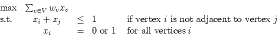

- (a)
- (5 points) How is the optimal solution to an instance of the traveling salesman problem altered if a constant k is added to every edge length?
- (b)
- (10 points) Show that any instance of the traveling salesman problem can be transformed into an equivalent instance satisfying the triangle inequality.
- (c)
- (5 points) Why doesn't the Christofides heuristic applied to the equivalent instance give a solution to the original instance that is within a factor of 3/2 of optimality?

Let S be the set of incidence vectors of cliques.
- (a)
- (5 points) Show that the dimension of S is m. (Note: The empty set is a clique in G.)
- (b)
- (5 points)
Let W be a maximal node packing in G. Show that
the inequality
is a facet defining inequality for S. - (c)
- (10 points)
Find the maximum cardinality clique in the graph
with ten nodes and with every edge except the following:
(1,2), (1,3), (1,6), (2,3), (2,4), (3,4), (4,5), (4,7),
(4,10), (5,6), (5,7), (5,8), (6,7), (6,8), (6,9), (7,8), (7,10),
(8,9), and (9,10).
(In the maximum cardinality problem, each vertex has weight
wv=1.)
Prove your solution is optimal by looking at the
linear programming relaxation of the clique problem
and adding selected inequalities of the form (1).
(The AMPL model file for the initial relaxation is in the file
http://www.math.rpi.edu/~mitchj/matp6620/finalq3.mod
and the data file is inhttp://www.math.rpi.edu/~mitchj/matp6620/finalq3.dat.
You may not be able to get an integral solution to the relaxation. Do you need to?)

Solve this problem using Bender's decomposition. (Take the problem
as the initial relaxation (RMP).)
where the final constraint requires that X be a symmetric positive semidefinite matrix, and C is given by
Recall that we obtain this relaxation by replacing the requirement that X=xxT with the requirement
- (a)
- (5 points)
Let
 be the vector corresponding to the solution given
above for our instance of MAXCUT.
Let
.
What is the value of
in (SDP)?
be the vector corresponding to the solution given
above for our instance of MAXCUT.
Let
.
What is the value of
in (SDP)?
- (b)
- (15 points)
The dual problem to (SDP) is
where Y is a diagonal matrix, so Yij=0 if . The value of any dual feasible solution provides a lower bound on the optimal value of (SDP). You may assume that the optimal primal and dual solutions X* and Y* for (SDP) and (SDD) satisfy a variant of complementary slackness, namely, X(C-Y)=0, where the product is the usual matrix product, and so 0 here denotes a 3 x 3 matrix of zeroes. Use this to construct a matrix that shows that the matrix solves (SDP).